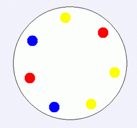
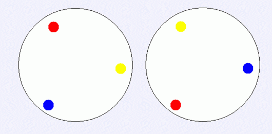

输入文件只有一行，包含一个正奇数n 1< = N < =10^9
Constantine刚结束在MySky Island的度假，正准备离开的时候，他想送给她的好朋友YY一份特别的礼物——MySky Island上特别的手工艺品宝石纪念币。宝石纪念币的一面上刻着小岛的名字MySky，或者收礼物的人，比如”to YY”。不过特别的是，每枚纪念币的反面，依次均匀的镶着一圈共n颗彩色的宝石。例如，下面是一个n=7时的简单例子：

因为纪念币是圆的，所以如果两种“宝石颜色的排布”如果经过旋转后对应位置的颜色相重合，就认为他们是相同的排布方式（请注意：纪念币只有一面镶宝石，所以两种排布若经过翻转以后是可以重合的，但只经过旋转无法使两者重合，则认为他们是不同的排布）。例如下面的两种排布方式就是相同的：

另外，由于MySky Island当地的习俗，每枚钱币上的宝石都只能嵌奇数颗宝石，不然就认为是不吉利的。宝石纪念币是现场制作的，游客可以选择自己喜欢的颜色的宝石。所以Constantine选出了他最喜欢的17种颜色（你如果要问为什么选这么多的话，只能告诉你因为17是他的幸运数字）。他想知道，如果他要求纪念币把这17种颜色的宝石都用上的话，可以制作出多少枚不同的纪念币。由于答案可能很大，你只需要计算答案的最后120位就可以了。
输入文件只有一行，包含一个正奇数n 1< = N < =10^9
输出文件包含1行，表示不同纪念币的枚数的最后120位。这120位从高位到低位依次输出，位数不足的用0在高位补足。
17
000000000000000000000000000000000000000000000000000000000000000000000000000000000000000000000000000000000020922789888000